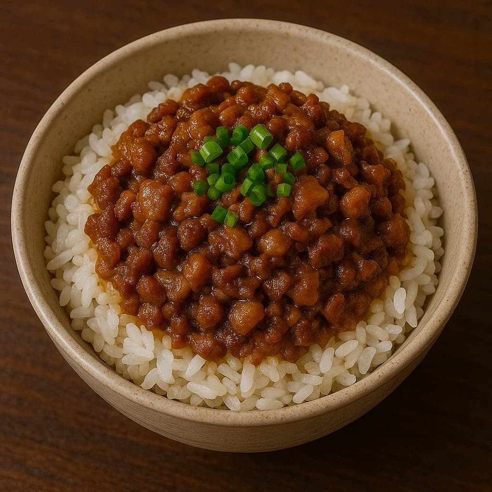

🍚 Sejarah & Informasi Lengkap Minced Pork Rice (滷肉飯)
📜 Sejarah & Latar Belakang
Minced Pork Rice (滷肉飯 - Lǔ Ròu Fàn) adalah makanan rumahan khas Taiwan yang terdiri dari nasi putih hangat disiram dengan daging babi cincang yang dimasak dalam saus kecap manis dan gurih.
- Asal mula: Merupakan hasil adaptasi makanan rakyat jelata, berasal dari budaya Hokkien.
- Nama lokal: Di bagian utara Taiwan disebut 滷肉飯 (*Lǔ Ròu Fàn*), sementara di selatan sering disebut 肉燥飯 (*Ròu Zào Fàn*).
- Popularitas: Salah satu comfort food paling digemari dan bisa ditemukan dari warung kecil hingga restoran bintang lima.
🎎 Budaya & Tradisi Penyajian
Minced Pork Rice adalah simbol dari kehangatan keluarga dan semangat kuliner rakyat Taiwan.
- Disajikan sebagai makanan sehari-hari, cepat, murah, dan mengenyangkan.
- Umumnya dilengkapi dengan telur rebus kecap, sayur asin, atau tahu.
- Beberapa daerah menambahkan kulit babi cincang untuk menambah kekayaan rasa.
🥢 Bahan & Informasi Gizi
Bahan Utama:
- Daging babi cincang (campuran daging dan lemak)
- Kecap asin, gula merah, bawang putih
- Lada putih, lima rempah (optional)
- Nasi putih panas
- Pelengkap: telur rebus kecap, acar sayur, daun bawang
Informasi Gizi (rata-rata per porsi):
- Kalori: ±450–600 kkal
- Protein: 15–25g
- Lemak: 20–30g
- Karbohidrat: 50–60g
- Sodium: Sedang – tinggi tergantung penggunaan kecap
📖 Resep & Cara Membuat:
Pelajari cara membuat Minced Pork Rice autentik dengan rasa yang kaya dan tekstur lembut. Klik di sini untuk resep lengkap!
📍 Rekomendasi Tempat di Taiwan
- Jin Feng Lu Rou Fan (金峰滷肉飯) ⭐️⭐️⭐️⭐️⭐️ – Taipei
- Formosa Chang (鬍鬚張) ⭐️⭐️⭐️⭐️ – Banyak cabang di Taiwan
- Huang Ji Lu Rou Fan (黃記滷肉飯) ⭐️⭐️⭐️⭐️ – Taipei
📍 Rekomendasi Tempat di Indonesia
Jakarta:
- Din Tai Fung ⭐️⭐️⭐️⭐️⭐️ – Grand Indonesia, Plaza Senayan
- Formosa Taiwan Delight ⭐️⭐️⭐️⭐️ – Muara Karang
- Imperial Lamian ⭐️⭐️⭐️⭐️ – Mall Kelapa Gading
Bandung:
- Waroeng Taiwan 88 ⭐️⭐️⭐️⭐️⭐️ – Cihampelas
- Eastern Oriental ⭐️⭐️⭐️ – Trans Studio Mall